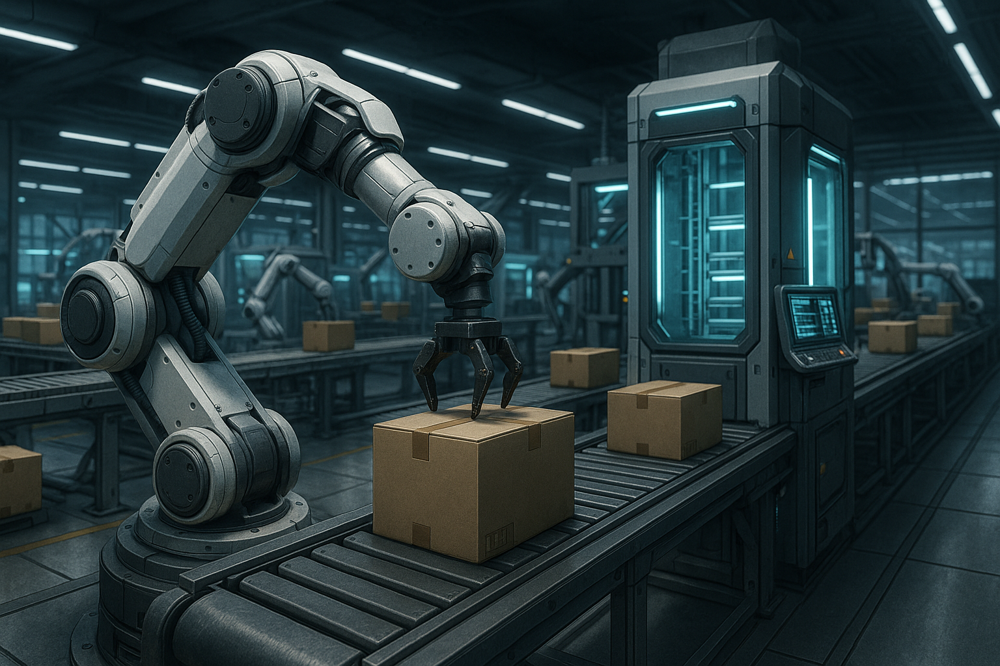

Click para continuar
HYPERPACK
En un mundo donde la sostenibilidad y la innovación convergen, nació Fito/Tissues, una empresa pionera dedicada a la confeccion de prendas de tejidos renovables, y como primer producto aportan una revolucionaria fibra de bambú de nueva generación.
Todo comienza con la fibra B-Cell-X, un desarrollo textil de alto rendimiento extraído del bambú mediante un proceso de regeneración en ciclo cerrado, que permite conservar las propiedades naturales del bambú —como su transpirabilidad, suavidad y capacidad antibacteriana— sin generar residuos químicos. Esta fibra no solo es ecológica, sino que ofrece una resistencia mecánica superior al algodón y una adaptabilidad térmica ideal tanto para climas cálidos como fríos. El tejido final es hipoalergénico, compostable y altamente duradero, ideal para una moda ética y técnica.
Conscientes de que la sostenibilidad no termina en la prenda, en Fito/Tissues decidimos ir más allá: con ayuda de HYPERPACK (desarroladora del proyecto) desarrollamos un sistema de empaquetado modular, inteligente y compostable que respeta la misma filosofía de nuestra empresa. Nuestros envoltorios están hechos con bioplásticos derivados del maíz y almidón de patata, reforzados con microfibras vegetales recicladas. Además, cada paquete incorpora una etiqueta RFID ecológica, que permite el seguimiento de la prenda sin el uso de tinta o materiales contaminantes, y que se desactiva de forma segura al llegar al usuario.

Para maximizar la eficiencia y minimizar el impacto ambiental, hemos integrado un sistema de robótica colaborativa de última generación en nuestras líneas de empaquetado. Nuestros robots, impulsados por inteligencia artificial adaptativa, son capaces de identificar el tipo de prenda, calcular el volumen óptimo del paquete y aplicar el sellado biodegradable con precisión milimétrica, todo sin intervención humana directa. Esta automatización no solo reduce errores y desperdicios, sino que permite un flujo de trabajo más ágil, seguro y sostenible.
La combinación de una tecnología textil avanzada, un empaquetado consciente e innovador, y una infraestructura robótica inteligente, nos convierte en un eslabón clave en la cadena de valor de la moda sostenible. No solo empaquetamos ropa: empaquetamos el futuro.
Ir a la Rubrica